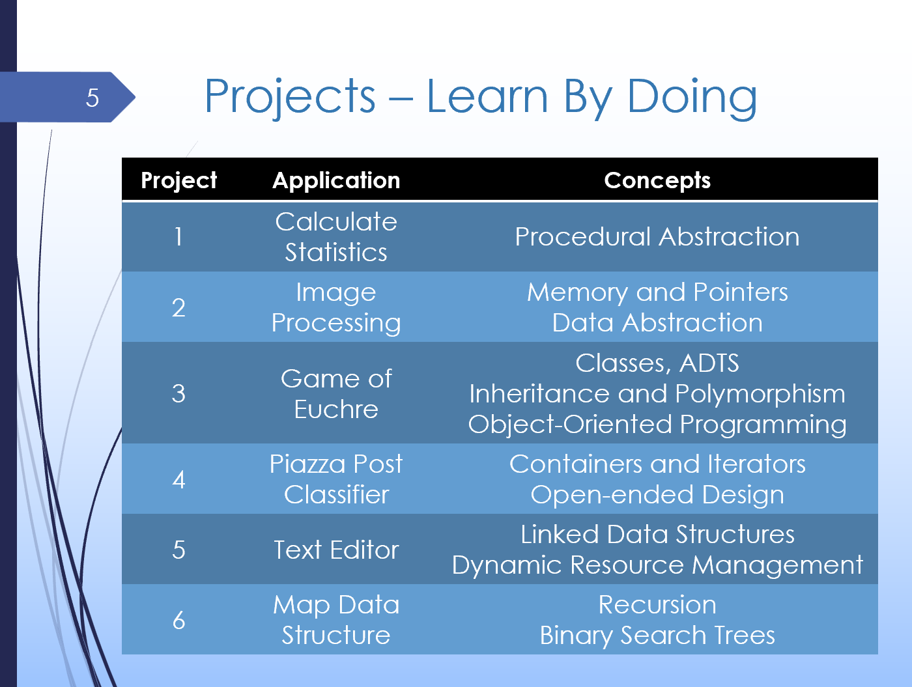
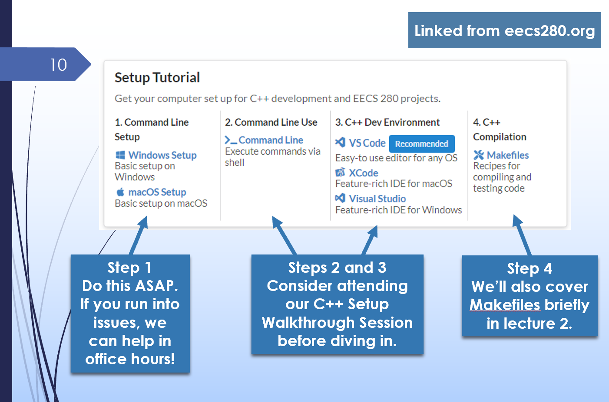
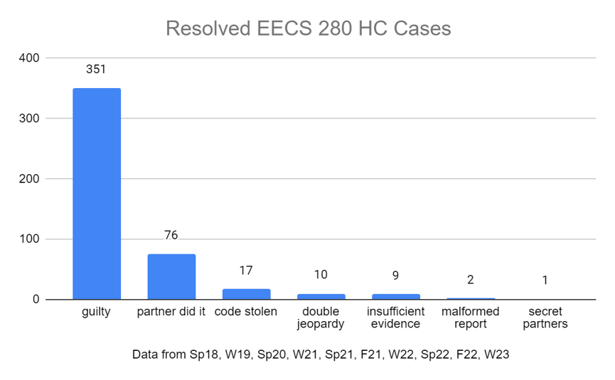

Welcome to EECS 280! This lecture presents our motivations and big-picture goals, some course logistics, and an introduction to programming in C++.
Participation credit for async lectures is automatically recorded once you complete the embedded exercises. Take a look at the top left of the page. You'll need to sign in with your @umich.edu Google account so that we know it's you.
Completion of individual exercises is tracked in the navigation panel to the left and section headers within the page. Once all exercises are complete, you'll see a "Completion Verified" message.
To earn participation credit, complete the lecture by 11:59pm on the day the lecture is scheduled.
|
1: The Big Picture
What's EECS 280 all about? Why are we here? Why do we care? While the overall goals of EECS 280 haven't changed since… checks video… 2021… a few specific things have! I'll make sure to call out anything specific you need to know for the current term. Where course content has changed or I figure out a better way to teach something, I'll also make sure to record updated videos. Sometimes I reuse a video and point out a few minor differences. Because course policies change slightly each term, this lecture has more cases of that than usual… Fall 2024We now have 6 projects instead of 5, but the workload is the same. We used to have a single project covering "Binary Search Trees" and a "Piazza Classifier Application". This term, we're splitting it into two pieces. Project 4 is now the "Piazza Classifier" half, and Project 5 is the "Binary Search Trees" half. We made this change because it aligns better with the flow of curriculum in the rest of the course and overall should make for a better student experience. The application on the old project 4 has changed to implementing a text editor using a linked list, and it now sits at project 5. We made this change because it's a more interesting and well-motivated application of a linked list (which we'll cover later in the course) than previous versions of the project.

|
|
2: Course Essentials
Let's take a look at the major parts of the course, including resources and websites you'll use to engage with the course and how the overall course is graded. Fall 2024One correction to this video. This term, we're using Ed rather than Piazza for our Q&A forum. Don't worry if this all seems a bit overwhelming. There are a lot of different components to the course and a bunch of different resources to get used to. You can find everything from eecs280.org, and we'll try to keep you up-to-date with the most relevant material. I also highly encourage that you ask questions if you're feeling lost - on Ed, Discord, in office hours, in lab, etc. Setup Tutorials

C++ Walkthrough Sessions
|
|
3: Evaluation and Grading
3.1
It's not terribly exciting, but let's take a bit of time to discuss assignment weights, exams, and overall grading in the course. Fall 2024Recall that we're splitting up project 5 for this term, into projects 4 and 6. Each of those halves is worth 5% each. Please also note a key difference for Fall 2024 - lecture participation is optionally worth 3% of your overall grade. We'll compute your grade with and without it and take the better. You can find full details in our syllabus at https://eecs280.org/syllabus.html#lecture-participation.
3.1 Exercise: Evaluation and Grading
Here's your first participation exercise! Fill in the blanks below. are the only part of the grade computation that is curved. In previous terms, were not graded, but now they are worth an optional 3%. A student scoring 89.7% overall (with 91.8% on projects, 86.8% on exams) would earn a grade of . A student scoring 78.2% overall (with 58.1% on projects, 93.25% on exams) would earn a grade of . |
|
4: Lab Groups and Exercises
Lectures are followed up with labs, where you work with small groups of other students to further explore and pratice the course material. |
|
5: Machine Code and Compilation
Let's take a break from talking about course logistics and dive into our first sequence of course material! We'll start with a brief introduction to the nature of C++ as a compiled language. |
|
6: Demo: A First Progam in C++
So, what does it actually look like to write a program in C++, compile it, and run it? There were several commands in there, including the |
|
7: A Tour of C++
7.1
Now, we'll spend some time on a brief, whirlwind-style tour of some of the characteristics of C++. This is just a high-level overview, and we'll spend more time on a lot of details throughout the rest of the course. It's worth looking at expressions and variables in a bit more detail, especially the way variables and their types relate to the underlying memory used in our program. Understanding variables as a name for an object in memory also helps us understand what would happen if a variable were declared, but not properly initialized before we use it… Finally, we'll look at a few ways the compiler checks for common errors in programs before we're allowed to run them, using rules of scope and static typing.
7.1 Exercise: C++ Fundamentals
Complete each of the tasks described in the comments. Sample solution… |
|
8: Projects and Autograder
You get to exercise the skills you learn in lecture and lab in six large-scale programming projects throughout the course, designed to solidify your understanding and give you a chance to build some neat applications with real-world appeal! |
|
9: Collaboration and Honor Code
We want you to learn with and from each other! Enjoying the class with others and having a network you can reach out to for help is highly encouraged. At the same time, we want to make sure everyone has an opportunity to learn for themselves and that nobody takes credit for someone else's work. We follow the UM CoE Honor Code. The stuff I said in that video all still applies… but that chart is pretty old. Here's a more recent chart from the terms of EECS 280 (and excluding ENGR 101) that I've been involved with. The takeaway is the same - we only report cases to the honor council where there is compelling evidence plagiarism occurred.

Generative AI Policy In almost all cases in EECS 280, I highly recommend against using generative AI tools for writing ANY code, regardless of the amount. A huge part of this course is building up your own programming skills. |
|
10: Wrapping Up
Just a few parting thoughts. |